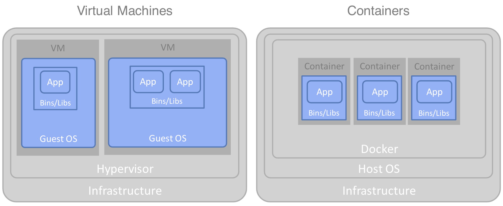

コンテナへの移行のメリット
ほとんどの企業は、自社のIT資産の一部をコンテナに移行する戦略を持っているか、あるいは持ちたいと考えています。これは、「クラウドへの移行」戦略の重要なサブセットです。主な課題は、コンテナ化を単なるインフラのアップグレードと捉え、過去のハードウェアのアップグレードになぞらえたり、過去10年ほどの間に行われた仮想マシンへの移行になぞらえたりすることが多いことです。このような見方をすると、「リフト＆シフト」というアプローチになってしまい、コンテナがもたらすものの前提を見失ってしまいます。これでは、コンテナがもたらす前提を見失ってしまいます。最悪の場合、モダナイゼーションプログラム全体が失敗に終わることになります。
この記事では、コンテナ化のより広範な潜在的メリットについて説明します。これらのメリットを得るために、コンテナ・インフラストラクチャへの移行に加えて行わなければならない追加のアクションを学びます。
コンテナを過度に単純化して理解すると、潜在的なメリットを誤解することになる。¶
コンテナ化とは、Dockerなどのコンテナ技術でコンポーネントを実行し、おそらくKubernetesなどのコンテナオーケストレーション技術を使ってそれらのコンテナを管理することです。
今日、ほとんどの企業は、自社の資産のかなりの部分を仮想マシン（VM）で運用しています。VMとコンテナの違いを考えてみましょう。VMのイメージには、完全なオペレーティングシステムが含まれています。一方、コンテナイメージは、マシン上のホストOSからOSの機能のほとんどを引き継いでいます。コンテナイメージに必要なのは、言語ランタイムのためのバイナリやライブラリ、そしてもちろんアプリケーションコードそのものなどの追加部分だけです。

明らかにコンテナイメージは、仮想マシンイメージに比べてはるかに軽量です。ディスクやメモリの占有量が少なく、別のOSを起動したり停止したりする必要がないため、起動や停止をより迅速に行うことができます。そのため、インフラの最適化がコンテナへの移行の主なメリットであるという結論に簡単に達してしまいます。さらに悪いことに、「軽量コンテナ」という考え方から、コンテナは本質的にパフォーマンスが優れているという結論に達するかもしれません。しかし、このような考えはすぐに間違った仮定につながり、大局を見失うことになります。
現実には、特定のアプリケーションのパフォーマンスを最大化することが第一の目的である場合、ベアメタル上のホストOSに直接インストールする従来の方法が、ほとんどの場合、最高のパフォーマンスを提供します。なぜなら、アーキテクチャのいくつかのレイヤーを取り除くことができるからです。
さらに、インフラの最適化は、複数の異種ワークロードを同じリソースに配置することで、あるワークロードの閑散期と別のワークロードの繁忙期のバランスを取ることができて初めて有効になります。これは仮想マシンのインフラでも同じことが言えます。したがって、すでに確立された仮想マシン環境で多数の異なるワークロードを処理している場合、そのワークロードをコンテナに基本的に「リフト＆シフト」しても、追加のアクションを併用しない限り、大幅な最適化の効率化にはつながらないでしょう。
コンテナ化への取り組みを成功させるためには、コンテナ化の広範なメリット、コンテナ化によって組織がソリューションを開発・構築する方法がどのように変化するのか、そして「リフト＆シフト」というアプローチ以外にどのような追加アクションが必要なのかを検討する必要があります。
幅広いコンテナ化戦略の潜在的なメリットとは？¶
適切なアプローチをとり、コンテナへの移行が近代化の機会として認識されれば 適切なアプローチがとられ、コンテナへの移行が近代化の機会として認識されれば、以下の分野でより広範な利益をもたらすことができます。
-
- 俊敏性と生産性：開発の加速、環境間の一貫性の向上、自律的なチームによる生産性と品質の向上。
-
きめ細かな耐障害性：可用性の高いコンポーネントを独立して配置することで、単一障害点を取り除きます。
-
スケーラビリティとインフラの最適化：きめ細かなダイナミック・スケーリングと、コンポーネントやリソースの密度の最大化により、インフラのリソースを最大限に活用します。
-
運用の一貫性：異種コンポーネントの均質な管理により、環境を運用するために必要なスキルセットの範囲を縮小します。
-
コンポーネントの移植性：ノード、環境、クラウド間での移植性があり、プラットフォームを選択する際の選択肢が広がる。
以下のセクションでは、これらの各分野について詳しく説明します。
ベネフィット 1.アジリティと生産性¶
コンテナデプロイメントの軽量性は、チームが新しいコードやアーティファクトを開発から本番まで確実に移動させるスピードを劇的に変えることができます。しかし、このアプローチは、コンポーネントの粒度と構成の変更、およびコンポーネントのビルドとデプロイメントのプロセスの変更に依存しています。また、開発チームがより速いペースで作業できることも必要です。
コンテナ技術は、特に新しいリソースのプロビジョニングとコードのデプロイメントのスピードという点で、生産性に直接的なメリットをもたらします。例えば、新しいコンテナイメージのプロビジョニング、起動、スケーリングがどれだけ速くなるかを考えてみましょう。これに対して、新しい仮想マシンのプロビジョニングは、組織の複雑な手続きやリソースの割り当てに関する管理のために、数時間から場合によっては数日、あるいは数週間かかることもあります。しかし、このようなコンテナ技術は、その恩恵を最大限に受けようとするならば、物語の一部でしかありません。
大規模なコードのサイロを、細かいコンポーネントに分解する必要があります。また、うまく設計されていれば、他のコンポーネントへの依存性も少なくなります。うまく設計されていれば、他のコンポーネントへの依存も少なくなり、ビルドはよりシンプルに、より速く、よりわかりやすくなります。変更をより早くテストし、問題をより早く診断し、修正をより早く提供することができます。
このようにコンポーネントの数が増えれば、それらを個別に処理するのではなく、まとめて処理できるKubernetesのようなコンテナオーケストレーションプラットフォームが不可欠になるのは明らかです。
組織の分散化により、チームは自分たちのコードを完全に所有することになり、要件をより迅速にコンポーネントにマッピングできるようになります。チームは、できるだけ依存性のないコンポーネントを構築します。他のコンポーネントに影響を与えないように、独立してデプロイすることができます。デプロイのために他のチームとスケジュールを調整したり、環境を共有したり、共有ソフトウェアライブラリのバージョンを気にしたりする必要はありません。
イメージをベースにしたデプロイは、納品物の一貫性と品質を大幅に向上させます。コードとそのランタイム言語やOSのバージョンとの間の重要な依存関係は、効果的にイメージに焼き付けられます。この構造により、従来の共有サーバー環境で発生していた設定の違いによる問題が劇的に軽減されます。
もちろん、どんな技術を使っても、プロセスが適切に合理化されていなければ、機能をより早く本番に導入することはできません。アジャイル開発手法を導入し、チーム間のハンドオフや依存関係を減らす必要があります。
アジャイル開発手法は、継続的なインテグレーションとデプロイメント（CI/CD）を可能にするパイプラインの自動化と相まって、定期的なコードの反復をビルドしてデプロイするための効率的なメカニズムを必要とするからです。
まとめると、アジリティと生産性の面で以下のようなメリットを得ることができます。しかし、コンテナインフラへの移行に加えて、組織の分散化を受け入れ、きめ細かなコンポーネントにリパッケージし、コンテナオーケストレーションを用いて管理し、自動化されたパイプラインとイメージベースのデプロイメントによって強化されたアジャイル開発手法に移行する必要があります。これらのアプローチを導入することで、次のようなメリットが得られます。
- ビルド速度の向上
- メンテナンスサイクルの高速化
- 環境間の一貫性
- 独立したコンポーネントのデプロイメント
- 孤立したコンポーネントのテストの簡素化
- 異種のランタイムバージョン
- 標準化されたビルドパイプライン
- 標準化されたデプロイメント・メカニズム
- リソースのセルフサービス・プロビジョニング
- コントロールの分散化によるチームの自律性
- 明確なコンポーネントスコープとオーナーシップ
- テクノロジーの選択の自由
ベネフィット2.きめ細かな回復力¶
サイロ化されたアプリケーションをコンテナに移すだけでは、耐障害性の向上という点ではほとんど意味がありません。1つの関数でメモリリークが発生しても、アプリケーション全体がダウンする可能性があります。細かいコンポーネントを使用することで、回復力をより個別に提供することが可能になります。既存の機能に新しい機能や変更を加えても、他の機能に影響を与えることなく、安全に展開することができます。また、あるコンポーネントが故障しても、他のコンポーネントに影響を与える必要はありません。さらに、ファイン・グレイン・コンポーネントは、コードやライブラリの数が非常に少ないため、再起動時間が大幅に短縮されます。
この高速な再起動を利用するだけで、高可用性を実現でき、専用のウォームサーバーやコールドサーバーにリソースを割く必要がありません。必要に応じて場所を限定したり、レプリカのセットを物理的なノードや地域にうまく分散させるなど、より高度な再起動ポリシーを可能にするコンテナ・オーケストレーション機能が必要です。
オーケストレーション機能でクリーンな再起動を実現するためには、コンテナを使い捨てのコンポーネントとして実装し、自由に停止、開始、再配置できるようにする必要があります。
したがって、以下のようなきめ細かなレジリエンスのメリットをすべて得るためには、アプリケーションをきめ細かなコンポーネントに分割し、使い捨てコンポーネントのコンテナオーケストレーションによって管理する必要があります。
- 高可用性（HA）ペアではなく、再起動を可能にする迅速な再起動。
- 既存のコンポーネントを不安定にするリスクを排除した、安全で独立したデプロイメント。
- シンプルなHAとスケーリングのための迅速なスタート/ストップを可能にする使い捨てコンポーネント。
- 目的に合った個別のトポロジー。
- レプリケーションポリシーに基づく暗黙のハイアベイラビリティ、およびビルトインの再起動。
- ローリング・アップグレード、カナリア・リリース、A/Bテストによるきめ細かなロールアウト。
ベネフィット 3.オペレーションの一貫性¶
コンテナでは、ランタイムに管理するコンポーネントのタイプが統一されています。コンテナは外から見るとほとんど同じように見えます。
ビルドやデプロイメントを実行するために、製品やランタイム環境に特有のコマンドラインツールについて複雑な知識を得る必要はありません。また、ロードバランシングやアベイラビリティに必要な、ランタイム特有の複雑なトポロジーを作成・維持する必要もありません。コンテナ内の機能にかかわらず、ビルド、デプロイ、アップグレード、高可用性の提供方法、スケーリングはすべてまったく同じ方法で実現されます。これが運用の一貫性ということです。ランタイム環境を監視・管理するために、製品やランタイムの専門家である必要はもうありません。Kubernetesのような一般的なコンテナオーケストレーションプラットフォームがどのように機能するかを知っていればいいのです。
効果を上げるためには、デプロイメントを扱う方法に全く新しいアプローチが必要です。イメージベースのデプロイメントでは、コンポーネントのインスタンス化と実行に必要なすべてのものを、機能自体とその上で動作する実行環境の両方を含めて、単一の軽量イメージにカプセル化することができます。この完全にカプセル化されたコンポーネントがあれば、Kubernetesのようなプラットフォームは、実行環境や内部のコードについて何も知らなくても、任意のイメージに基づいて、クラスタ内の任意のノード上でコンテナを迅速に作成、起動、拡張することができます。
トポロジーの構成がコンテナと密接に結びついていることで（Infrastructure as code）、運用者はトポロジーの微妙な特性（可用性、スケーリング、ノードの親和性など）を理解しなくても、デプロイすることができるようになります。例えば、Helmチャートに埋め込まれたインフラの要件により、コンテナオーケストレーションプラットフォームは、必要な非機能的特性を提供するトポロジーを標準化された方法で設定することができます。
コンテナオーケストレーションプラットフォームが、可用性のためのコンテナの再配置、エラスティックなスケーラビリティのための新しいコンテナの導入、クリーンなアップグレードとロールバックを効率的に行うためには、使い捨てのコンポーネントを設計することが不可欠です。また、オペレータは、実行環境ごとに独自の技術を使用するのではなく、これらすべてのアクションに標準的なメカニズムを使用します。
コンテナオーケストレーションプラットフォームを使用すると、イメージベースのデプロイメントを活用して一貫したビルドとデプロイを行い、Infrastructure as codeをコンテナと一緒に提供して一貫したトポロジーの作成と自動メンテナンスを行い、標準化されたスケーリングと高可用性を可能にする使い捨てコンポーネントを確実に設計することができます。そのため、運用の一貫性という点で、以下のようなメリットが得られます。
- 標準化されたコンテナプラットフォームをベースとしたデプロイメント、ロードバランシング、高可用性、スケーリング、ローリングアップグレードとロールバック、ロギング、モニタリング、使用メトリクス、エンドポイントの公開、コンポーネント間のセキュリティなど。
- ヘテロジニアスノードの均質な管理。
- すべての導入製品およびランタイム環境において、1つのインフラストラクチャ・プラットフォームのスキルセットを提供します。
- 1つのランタイム環境から別のランタイム環境へスキルを移行するプロセスがよりシンプルになる。
- エンド・ツー・エンドのDevOpsに必要なスキルをより簡単に習得できます。
- 環境間の一貫性が向上します。
- ビルド、デプロイメント、およびトポロジー管理の自動化。
ベネフィット 4.スケーラビリティとインフラの最適化¶
仮想マシンでは、作業を処理する前にOS全体を起動する必要があります。コンテナは稼働中のOS内で起動・停止されるため、その軽量性から数秒で作成・破棄することができます。この構造はダイナミックなスケーラビリティに適しており、ワークロードの変化にリアルタイムで対応することが可能です。
Kubernetesなどのコンテナオーケストレーションプラットフォームでは、レプリケーションポリシーを指定し、必要に応じてコンテナをスケールアップ/ダウンすることができます。その結果、各コンテナは必要なリソースのみを使用し、余ったリソースはプラットフォーム上の他のコンテナに割り当てることができます。
エラスティック・スケーリングを実現するためには、アプリケーションをきめ細かなコンポーネントに分解することで、起動時間を短縮する必要があります。さらに、コンポーネントを細かく分割することで、アプリケーション全体とそのリソースを複製するのではなく、負荷のかかっている機能のみをスケールアップすることが可能になります。
さらに、コンテナ内で実行されるものは、オーケストレーション・プラットフォームが副作用なく自由にコンテナを導入・削除できるように、使い捨てのコンポーネントとして設計する必要があります。
要約すると、コンテナに移されたコンポーネントは、使い捨てのコンポーネントとして設計されている場合にのみ、プラットフォームによって効率的にスケーリングされます。さらに、真のディファレンシャル・スケーリングを得るために、細かいコンポーネントに分解されない限り、現在の形と同じ非効率なリソースでスケーリングされ続けます。スケーリングと最適化自体は、もちろん、本質的なコンテナオーケストレーションによって主に提供されます。次のようなメリットがありますね。
- 個々の機能のきめ細かなスケーリング。
- コンポーネントとリソースの密度の最大化。
- 仮想マシンに比べてアイソレーションのオーバーヘッドが少ない。
- リソース（CPU、メモリ、永続的ボリューム）の動的かつ弾力的なプロビジョニング。
ベネフィット 5.コンポーネントの移植性¶
移植性とは、コンポーネントを異なるプラットフォームに容易に移動できることを指します。しかし、「移動」はコピーや再構築を意味することもあり、これらは全く異なる意図を持った2つの異なる移植性の形態です。
コピーによる移植性とは、コンポーネントを別の目的地で変更せずに実行できることを意味します。コンテナプラットフォームは、コンテナイメージを作成した後、それをプラットフォーム上の任意のノードにコピーして起動し、コンテナを作成することができます。しかし、既存のソフトウェアをコンテナで動かすだけでは、必ずしもこのポータビリティを実現することはできません。根本的に、コピーによるポータビリティを得るためには、コンテナイメージをデプロイの単位として扱う、イメージベースのデプロイに移行することが必要です。
先に述べた移植性を効果的に実現するためには、小さなイメージ（ファイルのコピーを高速化するため）と迅速な起動時間が必要です。この移植性を実現するには、単にコンテナインフラに移行するだけではありません。この移植性は、単にコンテナインフラに移行するだけではなく、スケールアップや再配布のためにオーケストレーションエンジンによって自由に停止・起動できるように、使い捨てコンポーネントとして設計された、より小さなきめ細かなコンポーネントにリファクタリングすることで実現します。
また、トポロジーの特性をInfrastructure as Codeでしっかりと規定し、コンテナを配置する場所の制限をオーケストレーションエンジンが理解できるようにする必要があります。例えば、レプリカの最小数は何か、回復力を高めるために複数の地域に分散させる必要があるか、地理的なプライバシーの問題があるかどうかなどを知る必要があります。
しかし、コンテナのコピーによるポータビリティには注意点があります。コンテナイメージは、同じ種類のオペレーティングシステム間（例えば、同じ種類のLinuxやMicrosoft Windowsのバリエーション間）や、同じコアアーキテクチャに基づくハードウェア間（例えば、x86ベースのアーキテクチャ間やAMD間）で自由に移動できます。クラウドプラットフォームでは、タイプが似ているすべての環境のすべてのノードを選択することができるため、この方法で十分です。しかし、これらの境界を越えて移動する場合、イメージはそのままでは動作しません。代わりに、新しい基盤となるOSやハードウェア用にイメージを再構築することで、移植性を確保します。再構築後の新しい環境で動作させるために、実際のコードを変更する必要がないため、コンポーネントの移植性は保たれます。しかし、すべての環境でまったく同じイメージを実行しているわけではないので、一貫性という点ではまったく同じ保証はありません。このシナリオで期待できる最善の方法は、自動化されたパイプラインによって一貫性を確保し、最終的なイメージにプラットフォームの違いがあったとしても、少なくともビルドプロセスが同一であることを保証することです。
コンテナは一般的に移植性に優れています。しかし、その利点を真に生かすためには、少なくともイメージベースのデプロイメントに移行して、プラットフォーム間でのコンテナの移動やコピーを簡素化する必要があります。動的に移動やコピーを行う場合は、高速であることが望まれます。そのためには、イメージサイズを小さくして起動時間を短縮するために、きめ細かなコンポーネントにリファクタリングする必要があります。また、以前の場所から効率的に削除できるように、使い捨てのコンポーネントとして設計する必要があります。新しいノードへのイメージの移植には、コンテナ・オーケストレーション・プラットフォームを使用したいと思うかもしれませんが、その場合、Infrastructure-as-Codeアプローチでは、コンテナ・オーケストレーション・プラットフォームがコンテナの移植先について明確なガイダンスを持つようにします。また、オペレーティングシステムやハードウェアアーキテクチャが大きく異なる環境で移植を行う場合は、自動化されたパイプラインによってデプロイメント間の一貫性を保つことができます。コンテナプラットフォームへの移行に加えて、これらの追加ステップをすべて行うと、次のようなメリットがあります。
- コンテナは、特定のクラウド内のノードに動的に再配置することができます。 *コンテナは、特定のクラウド内のノード間で動的に再分配することができます * イメージは、あらゆるコンテナプラットフォーム上で構築および実行することができます。
- DockerやKubernetesなどのオープンなコンテナ化規格に注力できる。
- マルチクラウドシナリオが可能になります。
コンテナ化を成功させるためには、他にどのようなアクションが必要ですか？¶
これまでのセクションでは、コンテナ化のメリットを享受するためには、いくつかの追加ステップが必要であることを学びました。コンテナ・アーキテクチャへの移行と並行して、以下の変更を行う必要があります。
-
Fine-grained components. 現在のコンポーネントを、より細かい粒度の要素に分解し、互いに完全に独立して設計、デプロイ、スケール、メンテナンスができるようにします。
-
_Disposable components.__ ステートレスで軽量なコンテナを設計し、即座に停止することができるので、オーケストレーション・プラットフォームは、コンテナが内部でどのように動作するかについて何も知らなくても、そのライフサイクルを管理することができます。 ビルド・パイプラインを自動化することで、変更をより迅速に繰り返すことができます。 この配信により、展開と管理が簡素化され、環境間の一貫性が向上します。
- Infrastructure as code. コンテナプラットフォームでは、コンテナの展開ごとに固有のトポロジーを効果的に構築します。スケーリング、ロードバランシング、ゾーン間の分散、ルーティング、セキュリティなど、このトポロジーの特性は、ファイルで宣言的に指定されます。これらのファイルは、事実上、コンテナ内のコンポーネントのコードベースの一部でなければなりません。このアプローチにより、コンポーネントは、あらゆる環境において、そのニーズに特化したトポロジーで一貫して提供されます。
- 組織の分散化 コンテナ・オーケストレーション・プラットフォームが提供するきめ細かなデプロイメントと運用の一貫性により、ソリューションの構築と維持に必要なエントリーレベルの知識が軽減されます。このアプローチにより、技術を中心とした中央集権的なチームの必要性が減ります。ビジネスチームは独自の技術チーム（シャドーIT）を持つことができ、新しいイノベーションの市場投入までの時間を短縮することができます。
- アジャイル開発方法論. アジャイル方法論とコンテナの間には明確な相乗効果があります。どちらも、権限を与えられた（分散化された）チームが、よりビジネスに近い形で迅速な変更サイクルを実現することを可能にします。
- チームが必要なリソースを独立して簡単にセットアップできるようにしなければなりません。もちろん、コンテナオーケストレーションプラットフォーム上でコンテナをプロビジョニングする機能も含まれますが、ソースコードリポジトリ、ビルドオートメーション機能、イメージリポジトリなどのチームリソースも含まれます。
これらの追加アクションの具体的な内容については、本連載のPart 2をご覧ください。
まとめ¶
コンテナ化を単なるインフラのアップグレードとして扱い、リソースの最適化に焦点を当てるべきではありません。実際、コンテナ化に対して「リフト＆シフト」のような単純なアプローチでは、価値ある結果を得ることはできません。代わりに、コンテナへの移行に加えて実行すべき一連のアクションがあります。これらのアクションによって、より広範なメリットを実現することができるのです。
謝辞¶
この連載のアイデアを一緒に考えてくれたBrian Petrini氏に感謝します。